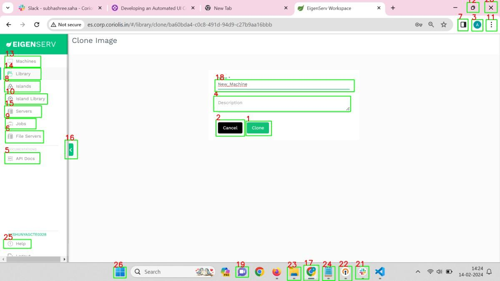
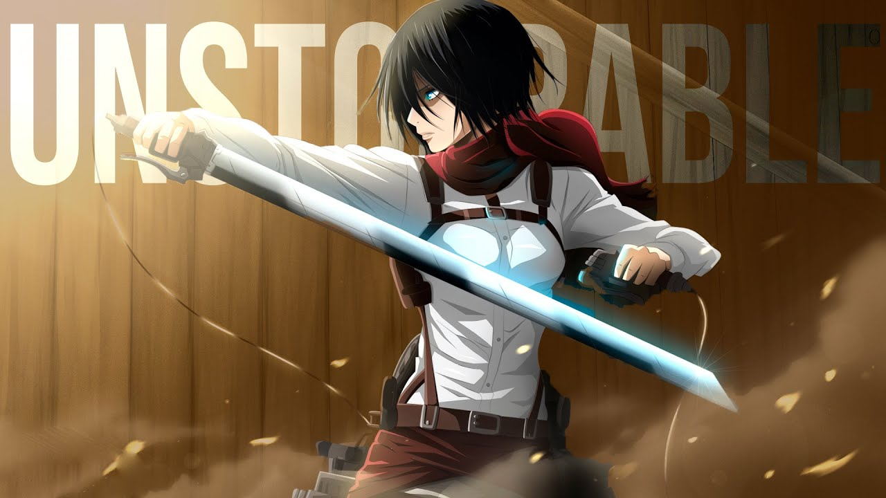

Coriolis Technologies: My experience as a Summer Intern.
A little bit about Myself:
Hey everyone, I'm Nandini, a senior pursuing my M.Sc degree in Data
Science from CMI. Recently, I completed my 2024 summer internship on
Web UI Automation at Coriolis Technologies. In this blog, I
have shared my overall experience.
If you want to know me better, you might want to visit my
LinkedIn profile,
GitHub profile
or go through my portfolio.
Here is an image that annotated the UI elements of a page:

What is "Automated Web UI testing":
We all have heard about Selenium and cypress. Writing a e2e test using those technologies requires proficiency in programming languages. Automated UI testing is a critical process aimed at validating the functionality, usability, and consistency of user interfaces without manual intervention. You can consider it as a tool like cypress but requires you only to write test-cases in english. This project focuses on the same and uses Machine Learning and Artificial Intelligence to streamline the UI testing process. By leveraging GPT-3 to generate test steps based on predefined test cases, we execute these steps automatically against a designated website. The outcomes are then assessed to determine the success or failure of each test case. This report presents the methodology, challenges, and outcomes of implementing Automated Web UI testing in a real-world scenario.

Problem Statement:
UI testing is a critical process aimed at validating the functionality, usability, and consistency of user interfaces without manual intervention. The objective of this project is to automate the UI testing process of a web application.
- Manual UI testing can be time-consuming and prone to errors, especially as applications grow in complexity.
- By leveraging automated UI testing, we aim to address these challenges and streamline the testing process.
- This project can be considered an alternative to UI testing tools such as Selenium and Cypress. They make use of element ID or to identify elements to take action on.
- Here we are trying a new approach to understand the look and feel of the application using AI/ML and leverage that to do actions.
Key challenges include:
- Developing a robust test framework that can automatically navigate through the UI of web applications.
- Generating accurate and comprehensive test steps from predefined test cases using natural language processing techniques like GPT-3.5.
- Getting the pixel coordinates of the UI elements required for the test cases.
- Executing the generated test steps automatically and verifying the success or failure of each test case.
This project aims to demonstrate the feasibility and effectiveness of Automated Web UI testing using Artificial Intelligence and Machine Learning to enhance the reliability and efficiency of software testing processes.
Test Steps Input
On test-case and test-steps input, we use GPT-3.5 to generate the
commands that will direct the testing.
The test steps are the following:
- Click on the Servers tab.
- Click on the Search textbox.
- Type hercules.
- Verify, it by a message hercules.
- Capture the screenshot for verification.
GPT-3.5 takes the previous test case and test steps and returns the following commands that will direct the UI automation:
[
{ "testcase": "Search in Servers tab"},
{ "test id": "id"},
{ "click": "Servers tab"},
{ "click": "Search textbox"},
{ "type": "hercules"},
{ "verify": "message", "text": "hercules"},
{ "capture screenshot": "verification"}
]
The workflow:
To carry out the test steps, the model must be able to click on the particular UI elements such as Servers tab, Search textbox etc and verify that there exists some verification messages such as texts.
- YOLOv8: YOLOv8 model performs UI elements detection i.e given a webpage, returns the annotated UI elements.
- GPT-4 Vision: The GPT-4v model detects the intended UI elements among many and return their coordinates.
- PaddleOCR: After employing the previous approach, either some of the UI elements remain undetected by ML model or their accuracy were compromised. This became the motivation for including the OCR technique which works better with text recognition and subsequently increased the accuracy of the process from 60% to 80%.
The whole workflow pipeline works like this:
- On image input, the pre-trained model uses YOLOv8 to detect UI elements.
- Based on the button type and the button content, the returned JSON and UI elements are divided into the following parts:
blacked_elements = ['icon', 'button', 'block', 'tab', 'option']
normal_elements = ['textbox', 'radio', 'toggle', 'dropdown']
checkboxes_elements = ['check']
ocr_elements = ['tab', 'text']
- Normal UI elements: This set contains all the UI elements that need more context than the element itself, e.g., textbox; the textbox needs the name of the textbox to identify it.
- Blacked UI elements: This set contains all the elements which can be identified by the content inside it, e.g., button.
- Checkbox UI elements: This set contains all the checkbox UI elements.
- OCR UI elements: This set contains all the elements which can be identified by the content inside it or may not be detected by YOLOv8 with good accuracy.
The model follows these steps:
- First, the pre-trained YOLOv8 model annotates the UI elements and generates a JSON file.
- According to the elements, it is divided into black, ocr, normal, and checkbox elements.
- Black elements are divided into further images to avoid clashing.
- Then the pre-trained OCR model annotates all the text inside the web page and generates a JSON.
- Then all the UI elements are marked with a target number.
- Now on query, the model first infers the type of the UI element, and then according to the type, it chooses a process.
- If the element belongs to the blacked elements, we give all the blacked images to GPT-4V and ask it to return the target number for the element.
- If it's an OCR element, then we go through the OCR JSON and find the target number of the bounding box using fuzzy matching. If there are multiple such boxes, we take IoU (Intersection over Union) to find the best match.
- If the element is a normal element, then we ask GPT-4V to find a context and return the element target number.
- Similarly, for checkbox elements, we will ask GPT-4V to return the checkbox with a similar context.
- Option icons are generally associated with a checkbox. So if the input element is an option icon, we find the checkbox with the similar context and then by coordinate mapping, we find the target number of the option icon.
- After finding the target number from the JSON, we extract the coordinates of the target of the UI element and return the midpoint of that bounding box.
- Everything is written in a Flask server, and on input of a query element and an image, we run the above-mentioned model.
- To verify a query element and the testcase, we find a verification message using OCR and return the verification status.
You can view the project report here.
Thanksgiving:
All of these wouldn't be possible without the support of my parents,
friends and teachers. I'm thankful to them for all the help and
encouragement.
My deep gratitude goes first to the Coriolis Management and the CEO
Mr. Basant Rajan for providing me the opportunity to pursue an
internship here. I am indebted to my mentors Mr. Sudhir Kumar and
Mr. Rohan Nandode, who guided me throughout my internship. Their
unwavering enthusiasm and tireless efforts have constantly triggered
me for an exhaustive exploration. This internship enriched me with
so much knowledge and hands-on experience that it will always remain
close to my heart. I could not ask for anything more than what I got
here.
